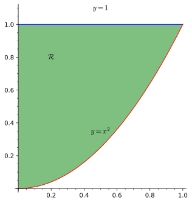
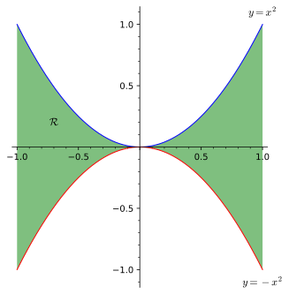
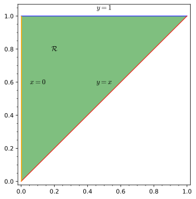

Section 1.3 Double integrals over general regions
We want a theory of integration that works not only over rectangles, but over more general regions of the \(xy\)-plane.
Definition 1.3.1.
A subset \(\mathcal{R}\subseteq \R^2\) is bounded if there is a constant \(C\) such that \(\mathcal{R}\) lies within the circle of radius \(C\) centered at the origin: equivalently, if
for all points \((x,y)\in \mathcal{R}\text{.}\)
Definition 1.3.2. Double integral over bounded region.
Let \(f\) be a function of two variables defined over the bounded region \(\mathcal{R}\subseteq\R^2\text{.}\) Let \(R\) be any rectangle containing \(\mathcal{R}\) and let \(f^*\) be the function defined on the rectangle \(R\) as follows:
The function \(f\) is integrable over \(\mathcal{R}\) if the function \(f^*\) is integrable over the rectangle \(R\text{,}\) and in this case we define
Observe how Definition 1.3.2 cleverly tackles integration of \(f\) over a general bounded region \(\mathcal{R}\) essentially by (a) defining \(f\) to be zero outside of \(\mathcal{R}\) and then (b) using the definition of the double integral over rectangles for any rectangle \(R\) containing \(\mathcal{R}\text{.}\) Of course, by extending \(f\) in this manner outside of \(\mathcal{R}\text{,}\) we create a function that is most likely not continuous. Indeed, the extended function \(f^*\) is created basically by unceremoniously setting all \(z\) values to 0 outside \(\mathcal{R}\text{.}\) This is bound to create some discontinuities along the boundary of our region \(\mathcal{R}\text{.}\)
Putting the issue of integrability aside for the moment, we can now generalize our previous notion of volume articulated in Definition 1.1.7.
Definition 1.3.4. Volume below graph and over planar region.
Let \(f\) be nonnegative and integrable over the bounded region \(\mathcal{R}\subseteq\R^2\text{,}\) and let \(\mathcal{S}\) be the region consisting of all points lying on or above \(\mathcal{R}\) and below the graph of \(f\text{:}\) i.e.,
We define the volume of \(\mathcal{S}\text{,}\) denoted \(\operatorname{vol} S\text{,}\) as
The elementary regions defined below provide situations where the extended function \(f^*\) from Definition 1.3.2 is guaranteed to be integrable, and furthermore, for which a Fubini-type theorem applies, allowing us to compute the double integral via iterated integrals.
Definition 1.3.5. Elementary planar region.
An elementary planar region (of type 1 or type 2) is a subset \(\mathcal{R}\subseteq \R^2\) of one of the following forms.
-
Type 1.
We have
\begin{equation*} \mathcal{R}=\{(x,y)\colon a\leq x\leq b, g_1(x)\leq y\leq g_2(x)\}\text{,} \end{equation*}where \(g_1, g_2\) are continuous on \([a,b]\text{.}\)
-
Type 2.
We have
\begin{equation*} \mathcal{R}=\{(x,y)\colon h_1(y)\leq x\leq h_2(y), c\leq y\leq d\}\text{,} \end{equation*}where \(h_1, h_2\) are continuous on \([c,d]\text{.}\)
Theorem 1.3.6. Fubini's theorem over elementary planar regions.
Assume \(f\) is continuous on the bounded planar region \(\mathcal{R}\subseteq \R^2\text{.}\)
-
Type 1.
If \(\mathcal{R}=\{(x,y)\colon a\leq x\leq b, g_1(x)\leq y\leq g_2(x)\}\text{,}\) where \(g_1, g_2\) are continuous on \([a,b]\text{,}\) then
\begin{equation} \iint\limits_\mathcal{R}f(x,y)\, dA=\int_a^b\int_{g_1(x)}^{g_2(x)}f(x,y)\, dy\, dx:=\int_a^b\left(\int_{g_1(x)}^{g_2(x)}f(x,y)\, dy\right) dx\text{.}\tag{1.3.1} \end{equation} -
Type 2.
If \(\mathcal{R}=\{(x,y)\colon h_1(y)\leq x\leq h_2(y), c\leq y\leq d\}\text{,}\) where \(h_1, h_2\) are continuous on \([c,d]\text{,}\) then
\begin{equation} \iint\limits_\mathcal{R}f(x,y)\, dA=\int_c^d\int_{h_1(y)}^{h_2(y)}f(x,y)\, dx\, dy:= \int_c^d\left(\int_{h_1(y)}^{h_2(y)}f(x,y)\, dx\right) dy\text{.}\tag{1.3.2} \end{equation}
Remark 1.3.7.
The notation := appearing in (1.3.1)–(1.3.2) means that the expression on the left is newly notation that we declare to mean the expression on the right. The notation =: is used similarly.
Example 1.3.8. Fubini's theorem over elementary planar regions.
In each case below the given region \(\mathcal{R}\) is elementary of type 1, type 2, or both. Use Theorem 1.3.6 to compute \(\iint\limits_\mathcal{R}f(x,y)\, dA\text{.}\)
-
\(f(x,y)=x+y\text{,}\) \(\mathcal{R}\colon\) region in first quadrant bounded by curves \(y=x^2\) and \(y=1\text{.}\)
Solution.The region \(\mathcal{R}\) is both of type 1 and type 2. The figure below indicates some of the details in its type-1 description.
We have\begin{align*} \iint\limits_\mathcal{R}f(x,y)\, dA \amp =\int_0^1\int_{x^2}^1x+y\, dy\, dx\amp \knowl{./knowl/th_Fubini_elementary.html}{\text{Theorem 1.3.6}}\\ \amp=\int_0^1 xy+\frac{1}{2}y^2\Bigr\vert_{y=x^2}^{y=1}\, dx \\ \amp = \int_0^1 x+\frac{1}{2}-(x^3+\frac{1}{2}x^4)\, dx\\ \amp = \frac{1}{2}x^2+\frac{1}{2}x-\frac{1}{4}x^4-\frac{1}{10}x^5\Bigr\vert_0^1\\ \amp =\frac{1}{2}+\frac{1}{2}-(\frac{1}{4}-\frac{1}{10})=\frac{13}{20}\text{.} \end{align*} -
\(f(x,y)=x^4-2y\text{,}\) \(\mathcal{R}\colon\) region bounded by \(y=-x^2\text{,}\) \(y=x^2\text{,}\) \(x=-1\text{,}\) \(x=1\text{.}\)
Solution.The given \(\mathcal{R}\) is type 1, but not type 2.
We have\begin{align*} \iint\limits_\mathcal{R}f(x,y)\, dA\amp = \int_{-1}^1\int_{-x^2}^{x^2}(x^4-2y)\, dy\, dx \amp \knowl{./knowl/th_Fubini_elementary.html}{\text{Theorem 1.3.6}}\\ \amp=\int_{-1}^1x^4y-y^2\Bigr\vert_{y=-x^2}^{y=x^2}\, dx \\ \amp =\int_{-1}^1 x^6-x^4-(-x^6-x^4)\, dx\\ \amp =\frac{2}{7}x^7\Bigr\vert_{-1}^1\\ \amp =\frac{4}{7}\text{.} \end{align*} -
\(f(x,y)=e^{y^2}\text{,}\) \(\mathcal{R}\colon\) triangle with vertices \((0,0), (0,1), (1,1)\text{.}\)
Solution.The region \(\mathcal{R}\) is of type 1 and 2, and thank goodness for that!
Indeed, notice that if we tried to integrate with respect to \(y\) first, as in the last two examples, we would get nowhere (by hand). This is because although the function \(g(y)=e^{y^2}\) does indeed have an antiderivative, it does not have one that we can write down in terms of our library of familiar functions. (We say \(g(y)=e^{y^2}\) does not have an elementary antiderivative.)However, we can certainly integrate with respect to \(x\text{,}\) and since \(\mathcal{R}=\{(x,y)\colon 0\leq x\leq y, 0\leq y\leq 1\}\) is also of type 2, Theorem 1.3.6 allows us to do just that:
\begin{align*} \iint\limits_\mathcal{R}f(x,y)\, dA \amp =\int_{0}^1\int_0^ye^{y^2}\, dx\, dy\\ \amp=\int_0^1 xe^{y^2}\Bigr\vert_{x=0}^{x=y}\, dy \\ \amp =\int_0^1 ye^{y^2}\, dy\\ \amp =\frac{1}{2}e^{y^2}\Bigr\vert_0^1\\ \amp =\frac{1}{2}(e-1)\text{.} \end{align*}
Theorem 1.3.9. Properties of double integrals.
Assume \(f\) and \(g\) are integrable over the bounded regions \(\mathcal{R}, \text{.}\)
-
Linearity.
Given any constants \(c,d\in \R\text{,}\) we have
\begin{equation*} \iint\limits_\mathcal{R}cf(x,y)+dg(x,y)\, dA= c \iint\limits_\mathcal{R}f(x,y)\, dA+d \iint\limits_\mathcal{R}g(x,y)\, dA \end{equation*} -
Domination.
If \(f\geq 0\) on \(\mathcal{R}\text{,}\) then \(\iint\limits_\mathcal{R}f(x,y)\, dA\geq 0\)
If \(f\geq g\) on \(\mathcal{R}\text{,}\) then \(\iint\limits_\mathcal{R}f(x,y)\, dA\geq \iint\limits_{\mathcal{R}}g(x,y)\, dA\text{.}\)
-
Additivity.
If \(\mathcal{R}=\mathcal{R}_1\cup \mathcal{R}_2\text{,}\) where \(\mathcal{R}_1\) and \(\mathcal{R}_2\) are non-overlapping, then
\begin{equation*} \iint\limits_{\mathcal{R}}f(x,y)\, dA=\iint\limits_{\mathcal{R}_1}f(x,y)\, dA+\iint\limits_{\mathcal{R}_2}f(x,y)\, dA\text{.} \end{equation*} -
Absolute value.
The function \(\abs{f}\) is integrable, and we have
\begin{equation*} \left\vert \iint\limits_\mathcal{R}f(x,y)\, dA\right\vert\leq \iint\limits_\mathcal{R}\vert f(x,y)\vert \, dA\text{.} \end{equation*}
Example 1.3.10. Using double integral properties.
Use symmetry properties of \(f\) and Theorem 1.3.9 to compute \(\iint\limits_{\mathcal{R}}f(x,y)\, dA\text{,}\) where \(f(x,y)=xy\) and \(\mathcal{R}\) is the planar region bounded by the curves \(x=y^2\) and \(x=1+\frac{1}{2}y^2\text{.}\)
Here is a diagram of \(\mathcal{R}\text{,}\) which we see is of type 2 and not of type 1.
One option would be to set up a type-2 iterated integral. We need to find the \(y\)-coordinates of the points of intersection of the two curves in order to get the bounds for \(y\text{.}\) We have
Thus the iterated integral is
which is not very difficult to compute. On the other hand we see that \(f(x,y)=xy\) is odd with respect to \(y\), in the sense that \(f(x,-y)=-f(x,y)\text{.}\) Furthermore the region \(\mathcal{R}\) is divided into two symmetric regions \(\mathcal{R}_1\) and \(\mathcal{R}_2\) based on the \(y\)-coordinate of a point being positive or negative.
Now using additivity (1.3.9) of the integral, we have the following persuasive looking chain of equalities:
My use of “persuasive” should be a red flag. The question is whether this chain of equalities is actually valid; and this boils down to whether \(\iint\limits_{\mathcal{R}_2}f(x,y)\, dA=-\iint\limits_{\mathcal{R}_1}f(x,y)\, dA\text{,}\) as claimed. Here is a graphical argument: we have \(f(x,y)\geq 0\) on \(\mathcal{R}_1\text{,}\) and thus \(\iint\limits_{\mathcal{R}_1}f(x,y)\, dA\) computes the volume \(V\) of the solid region above \(\mathcal{R}_1\) and below the graph of \(f\text{;}\) since \(f(x,-y)=-f(x,y)\text{,}\) it follows that \(-f(x,y)\geq 0\) on \(\mathcal{R}_2\text{,}\) and \(\iint\limits_{\mathcal{R}_2}-f(x,y)\, dA\) computes the same volume \(V\) (by symmetry of \(\mathcal{R}_1\) and \(\mathcal{R}_2\)); we conclude that
We could make this argument even more persuasive by appealing to the limit definition of the double integral: indeed, the oddness of \(f(x,y)\) with respect to \(y\text{,}\) and symmetry of \(\mathcal{R}_1\) and \(\mathcal{R}_2\) allow us to choose sequences of Riemann sums for \(S_n\) and \(S_n'\) for both integrals for which \(S_n=-S_n\) for all \(n\text{.}\)
Our discussion of oddness in Example 1.3.10 can be generalized to the following result.
Theorem 1.3.11. Double integral of even/odd functions.
Let \(f\) be integrable on the bounded region \(\mathcal{R}\subseteq \R^2\text{.}\)
-
Odd functions.
If \(f\) is odd with respect to \(x\) (i.e. \(f(-x,y)=-f(x,y)\) for all \((x,y)\in \mathcal{R}\)) and \(\mathcal{R}\) satisfies \((x,y)\in \mathcal{R} \iff (-x,y)\in \mathcal{R} \text{,}\) then \(\iint\limits_{\mathcal{R}}f(x,y)\, dA=0\text{.}\)
Similarly, if \(f\) is odd with respect to \(y\) (i.e. \(f(x,-y)=-f(x,y)\) for all \((x,y)\in \mathcal{R}\)) and \(\mathcal{R}\) satisfies \((x,y)\in \mathcal{R} \iff (x,-y)\in \mathcal{R} \text{,}\) then \(\iint\limits_{\mathcal{R}}f(x,y)\, dA=0\text{.}\)
-
Even functions.
If \(f\) is even with respect to \(x\) (i.e. \(f(-x,y)=f(x,y)\) for all \((x,y)\in \mathcal{R}\)) and \(\mathcal{R}\) satisfies \((x,y)\in \mathcal{R} \iff (-x,y)\in \mathcal{R} \text{,}\) then \(\iint\limits_{\mathcal{R}}f(x,y)\, dA=2\iint\limits_{\mathcal{R_1}}f(x,y)\, dA\text{.}\)
Similarly, if \(f\) is even with respect to \(y\) (i.e. \(f(x,-y)=f(x,y)\) for all \((x,y)\in \mathcal{R}\)) and \(\mathcal{R}\) satisfies \((x,y)\in \mathcal{R} \iff (x,-y)\in \mathcal{R} \text{,}\) then \(\iint\limits_{\mathcal{R}}f(x,y)\, dA=2\iint\limits_{\mathcal{R_1}}f(x,y)\, dA\text{.}\)
Sage example 1.3.1. Iterated integrals over elementary regions.
Sage can compute the iterated integrals appearing in Theorem 1.3.6 for regions of type 1 and 2. The cells below compute the first and third integrals from Example 1.3.8: the first as over a region of type 1, the second as over a region of type 2.
We mentioned that we can't get far by hand integrating \(e^{y^2}\) with respect to \(y\text{,}\) but Sage can handle it.
What is \(\operatorname{erf}\text{?}\) You can ask Sage (as we do below), and it tells you that
Equivalently, using the fundamental theorem of calculus, we see that \(\operatorname{erf}(x)\) is the unique antiderivative of \(\frac{2}{\sqrt{\pi}}e^{-x^2}\) whose value at \(x=0\) is zero.
www.geogebra.org/m/n84rytsrgeogebra.org